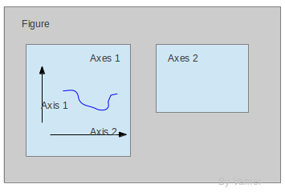
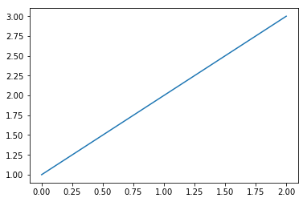
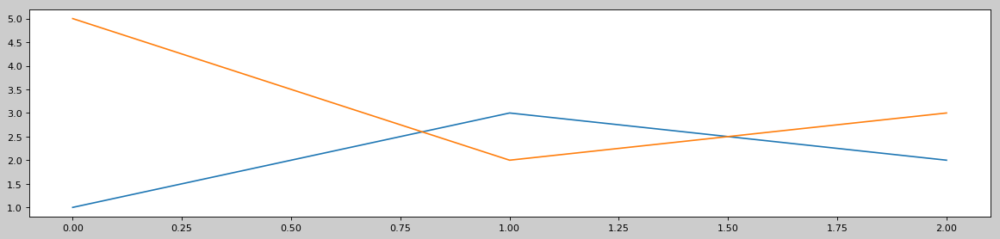
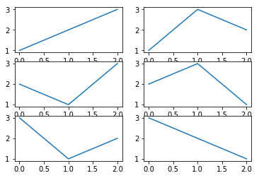
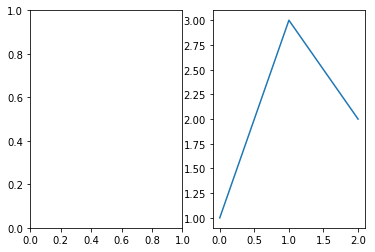
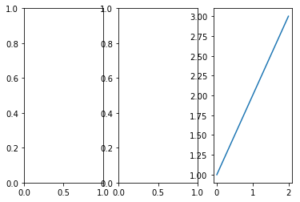
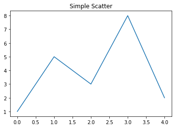
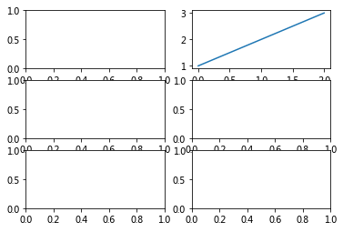
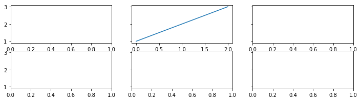
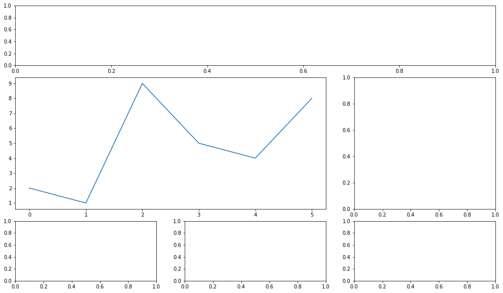

Matplotlib-绘图区域
绘图区域主要应用：同文件内绘制多图，同图像内分割绘制多子图
Matplotlib图像组成
- Matplotlib中，整个图像为一个figure父对象
- figure父对象是与用户交互的整个窗口
- 用于在同一文件内绘制多个图像时的区分
- figure对象中包含一个或多个axes(ax)子对象
- 每个ax子对象都是一个拥有自己独立坐标系的绘图区域
- 用于在同一图像内绘制多个子图像的区分

绘图时如果不手动设置figure父窗口和ax子窗口，Matplotlib默认会自动创建：
- 一个figure窗口
figure(1) - 和一个ax子窗口
subplots(111)
绘图，简写
plt.plot([1,2,3])
等价于正常写法，面向过程（常用）
plt.figure(1) # 创建figure父窗口，默认编号为1
plt.subplot(111) # 创建ax子窗口，默认：1行 1列 选中第1个
plt.plot([1,2,3])
面向对象写法（了解），将窗口对象赋给变量
fig, ax = plt.subplots() # 常用面向对象简写方式
# 上面代码等价于：
# fig = plt.figure()
# ax = fig.add_subplot(111)
ax.plot([1,2,3])
plt.show()

创建多个figure父对象
一个文件内绘制多个图像
plt.figure(num, figsize = (width, heigh))
- num：图像编号
- width，height：图像宽度，高度
# 每个figure是一个单独的图像
plt.figure() # 默认编号为1
plt.plot([1,2,3])
plt.figure(
2, # 图像编号，创建和选择图像使用
figsize = (18, 4), # 图像尺寸，***重要*************
dpi = 72, # 分辨率
facecolor = '#cccccc', # 背景颜色
)
plt.plot([1,3,2])
# 通过编号可以选中某个图像绘图
plt.figure(2)
plt.plot([5,2,3])
plt.show()

创建多个ax子对象
绘图区域：将一个fig大图分割为多个ax子图，分别绘制，同时输出
plt.subplot(nrows, ncols, plot_number)
- nrows，横轴数量，类似表格的 行
- ncols，纵轴数量，类似表格的 列
- plot_number，当前绘制的ax子图位置，横轴x,纵轴y
# 绘制3行2列共6个子图，当前绘制第1个(从左上角横排往右下角)
plt.subplot(3,2,1)
#plt.subplot(321) # 如果是横纵行列都是个位数，可以去掉逗号
plt.plot([1,2,3])
plt.subplot(3,2,2)
plt.plot([1,3,2])
plt.subplot(3,2,3)
plt.plot([2,1,3])
plt.subplot(3,2,4)
plt.plot([2,3,1])
plt.subplot(3,2,5)
plt.plot([3,1,2])
plt.subplot(3,2,6)
plt.plot([3,2,1])
plt.show()

fig父对象和ax子对象结合
# 图表1
plt.figure(1) # 创建figure父窗口，默认编号为1
plt.subplot(121)
plt.subplot(122) # 创建ax子窗口，1行2列，选中第2个
plt.plot([1,3,2])
# 图表2
plt.figure(2)
plt.subplot(131)
plt.subplot(132)
plt.subplot(133)
plt.plot([1,2,3])
plt.show()


面向对象的fig、ax结合的简写 （了解）
面向对象写法稍繁琐，可在代码任意位置选中某父窗口 一般简单绘图使用面向过程写法，复杂绘图使用面向对象写法
plt.subplots()：创建一个新的Figure，并返回一个含有已创建的subplot对象的NumPy数组
# 简写，单个图
fig,ax = plt.subplots()
ax.plot([1,5,3,8,2])
ax.set_title('hello world')
# 简写，多个图
fig2, ax2 = plt.subplots(3,2) # 创建一个3行2列的图表
ax2
ax2[0,1].plot([1,2,3]) # 绘图，0,1表示选中第0行第1列的ax子图
# 带详细参数
fig3, ax3 = plt.subplots(
figsize=(12,3), # 父窗口大小
nrows=2, # 子图行数
ncols=3, # 子图列数
sharex=False, # 是否共享x轴
sharey=True, # 是否共享y轴
)
ax3[0,1].plot([1,2,3])
plt.show()



复杂绘图区域：pyplot子绘图区域
设定网格,选中网格,确定选中行列区域数量,编号从0开始
plt.subplot2grid(GridSpee,CurSpee,rowspan=1,colspan=1)
- GridSpee：元组，这个图表共有几行几列
- 例如(3,3)，表示将区域分隔成3行3列9块区域
- CurSpee：当前选中第几行第几列的子图表
- 例如(1,0)，这里表示第1行第0列(行列都以0开头)
- rowspan：合并行
- 例如rowspan=2，合并本块和下方块
- conlspan：合并列
- 例如colspan=3，合并本块和右侧两块
plt.figure(1, figsize=(17,10))
plt.subplot2grid(
(4,3),# 4行3列
(0,0),# 选中0行0列单元格
colspan=3, #合并3列
)
plt.subplot2grid((4,3),(1,0),rowspan=2,colspan=2) # 选中1行0列单元格，合并2行，合并2列
plt.plot([2,1,9,5,4,8])
plt.subplot2grid((4,3),(1,2),rowspan=2) #选中1行2列单元格，合并2行
plt.subplot2grid((4,3),(3,0)) #选中3行0列单元格
plt.subplot2grid((4,3),(3,1)) #选中3行1列单元格
plt.subplot2grid((4,3),(3,2)) #选中3行2列单元格
plt.plot([3,5,2])
plt.show()
